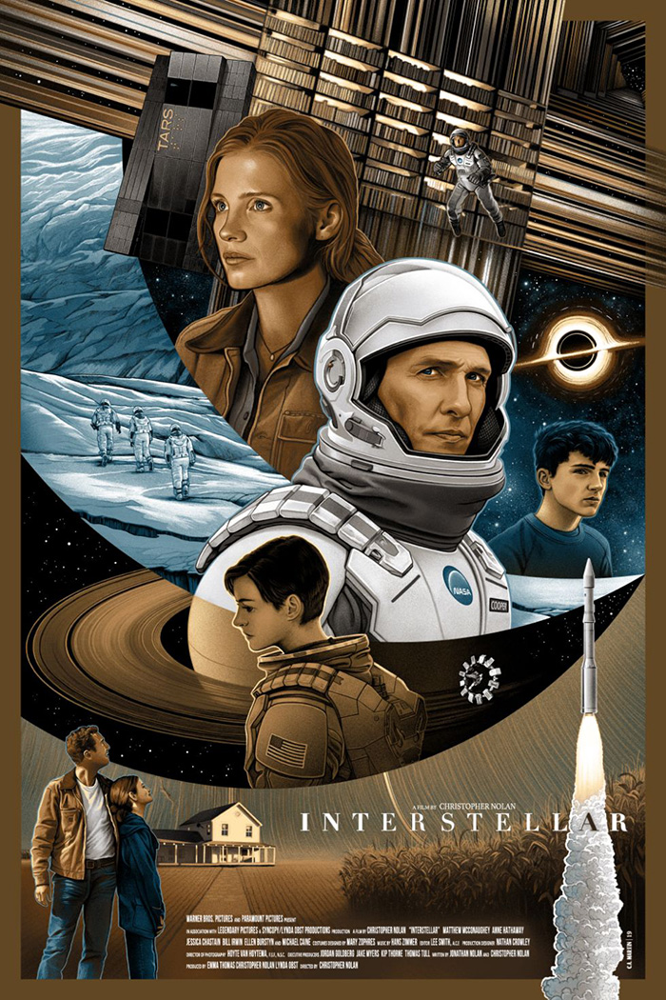
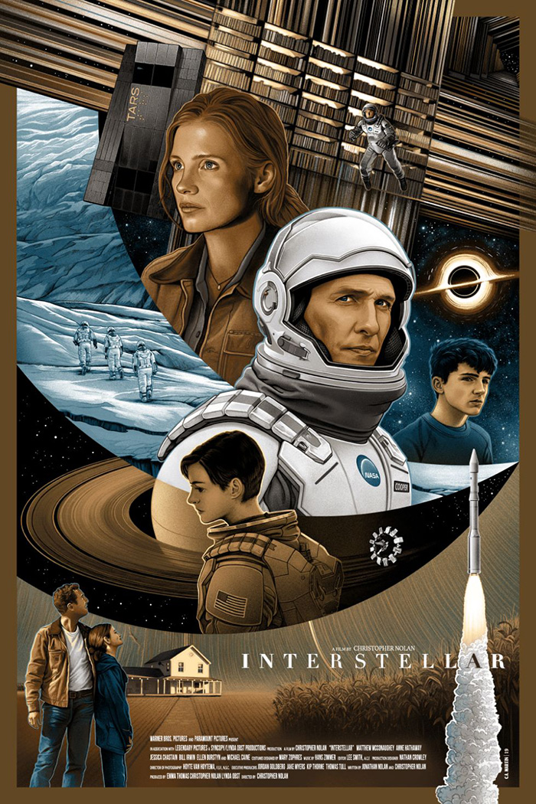

This is an Indian/Bollywood movie. I loved this movie because it gave an imporant message that we should chase excellence instead of success.
 

Really cool & interesting Sci-fi movie.


This Indian movie is about a kid with a reading disability and the challenges he faces from society.